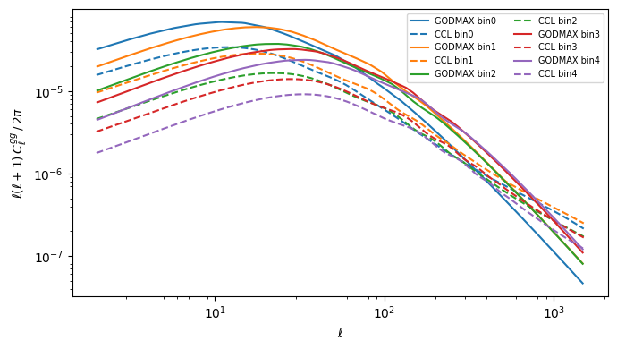
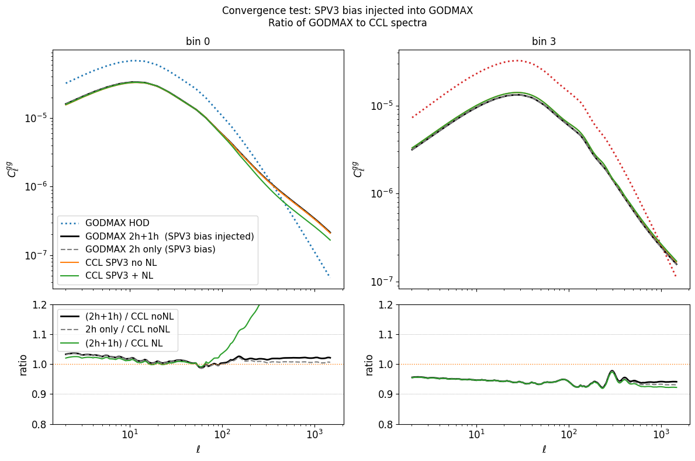
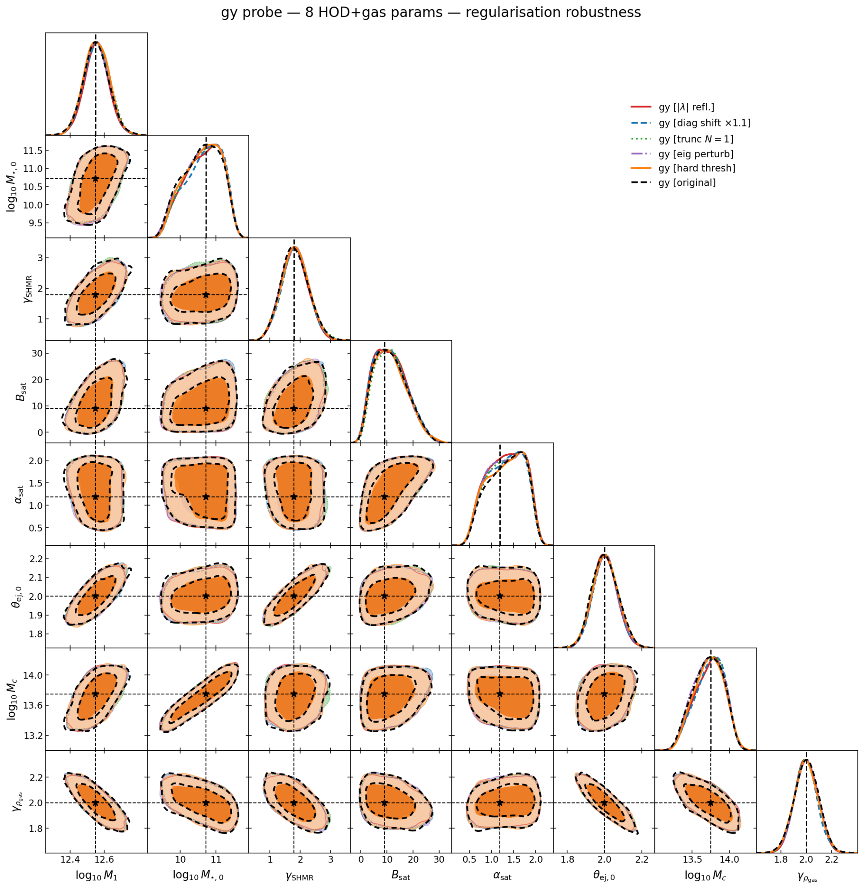
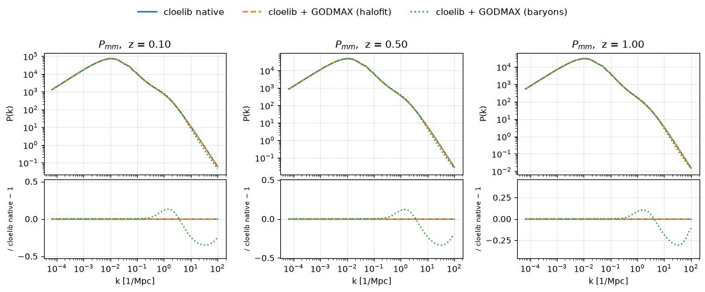
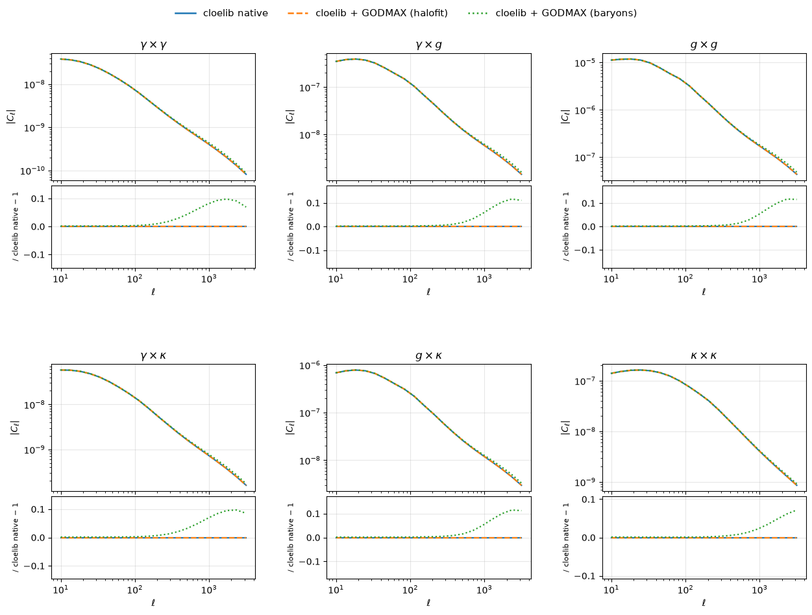
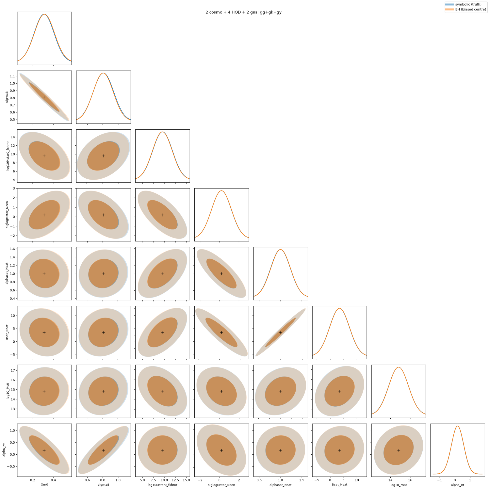
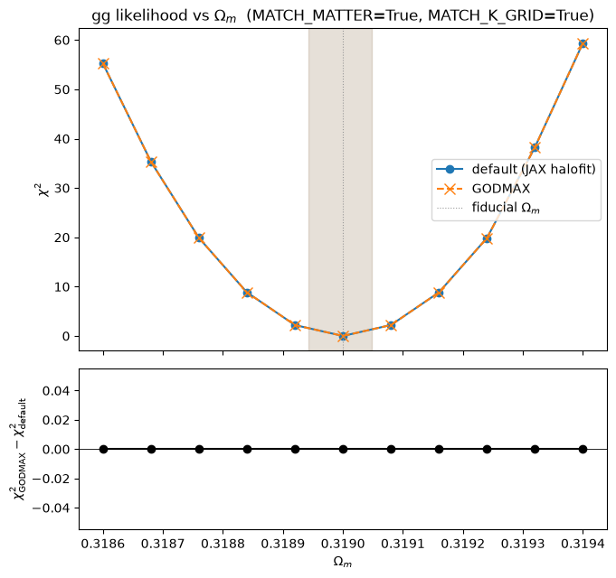

The big picture
Modelling, theory, likelihood and inference
From halos to observables
- Same halos for all tracers
- Own profile per tracer
- Differentiable (JAX → NUTS)
Halo-model angular power spectra
- \(A,B\in\{\kappa,y,g\}\); \(i,j\): tomographic bins
- \(\bar u\): tracer profile · \(dn/dM\): mass function · \(p(c|M)\): concentration
Matter profile (DMB)
Central stars + gas + collisionless matter
\[ \rho_{\rm dmb}(r)=\rho_{\rm cga}(r)+\rho_{\rm gas}(r)+\rho_{\rm clm}(r) \] \[ u_{\rm dmb/nfw}(k,z,M,c)=\int_0^\infty\!dr\,4\pi r^2\,\frac{\sin kr}{kr}\,\frac{\rho_{\rm dmb/nfw}(r)}{\bar\rho_{m,0}} \]- Feedback via the gas profile
- Same halos and feedback for all probes
Tracer profiles in multipole space
Probe γ · shear (WL convergence κ)
Probe y · Compton-y (tSZ)
Probe g · galaxy overdensity
Consistency checks
1 · Baseline (CCL) comparison
GODMAX vs CCL \(C_\ell^{ab}\)
✓ done2 · Covariance tests
Non-PSD covariance: no bias
✓ done3 · Sensitivity test
\(C_\ell\) response per parameter
✓ done4 · Baryonification toggle
Baryonic response on / off
✓ done5 · Convergence test
\(C_\ell\) vs numerical settings
✓ doneGODMAX vs CCL for \(C_\ell^{gg}\)

Question
Same \(C_\ell^{gg}\) as the CCL pipeline?
Result
- Same shape
- Amplitude differs per bin
- Gap grows at high \(\ell\)
Conclusion
- Not consistent as-is
- Different bias models → isolate the bias next
Isolating the bias prescription

Question
Is the difference due to the bias model?
Result
- Same SPV3 bias in both → agree to a few %
Conclusion
- Mismatch = bias prescription
- HOD calibration can recover CCL
Non-PSD analytic covariance

Question
Covariance is not PSD: does it, or its fix, bias posteriors?
Result
- Negative eigenvalues tiny
- Variance unchanged
- 5 regularisations → same posteriors
Conclusion
- Numerical artefacts
- No bias in the contours
Parameter sensitivity (1/3) · IA, systematics, gas
Question
Which IA, systematics, gas parameters matter?
Result
A_IA,Delta_z_bias,mult_shear_bias: all κ probesalpha_ky: κy only ·z0_IA: tiny
Conclusion
- Vary WL systematics
- Fix
z0_IA
Parameter sensitivity (2/3) · baryons, satellites
Question
Which baryon, satellite parameters matter?
Result
- Gas: high ℓ, mostly κy
nu_theta_ej_M: extreme- Satellites: gκ, gg
Conclusion
- Check
nu_theta_ej_Mprior - Fix
Bcut_Nsat,betacut_Nsat
Parameter sensitivity (3/3) · centrals, SHMR, stars
Question
Which central, SHMR, stellar parameters matter?
Result
siglogMstar_Ncen,delta_fshmr: strongest- Stellar / CGA: negligible
Conclusion
- Vary centrals + main SHMR
- Fix stellar / CGA
Current status (summary)
Theory code
Spectra understood end to end
Parameters
Which to vary / fix per probe
Pull request upstream
Fixes → main GODMAX repo
Access
Collaborator on main repo (for now)
Interfacing within Euclid
CLOE vs GODMAX: modelling choices
| shared | CLOE only | |
| Shear | Δz, m, NLA IA | TATT IA, n(z) width |
| Galaxies | Δz | linear b(z), magnification, RSD, n(z) width |
| CMB κ | lensing kernel | z* from Boltzmann (≈ 1090) |
| tSZ y | — | — |
| GODMAX |
| Δz, m, NLA IA |
| Δz · HOD bias (1h + 2h) |
| lensing kernel · zs = 1100 |
| new tracer + cross-spectra |
GODMAX inside cloelib (PR #664)
JAXBackground · \(\chi(z), H(z), D(z), A_s\to\sigma_8\)JAXLinearPerturbations: Eisenstein–Hu (JAX)GODMAXNonLinearPerturbations(background, P_lin, redshifts, …)build_godmax_config: GODMAX defaults + overridesbase_class(sim, halo, analysis, other)cosmology_backend = 'cloelib'JAXNonLinearPerturbations: halofit \(P_{\rm hf}(k,z)\)to cloelib
matter_power_spectrum = halofit × \(P_{\rm DMB}/P_{\rm NFW}\)power_spectrum(f1, f2), f ∈ {m, g, y}ShearTracer · Δz, m, NLAPositionsTracer(galaxy_bias_model='hod'): bias in \(P_{gg}\), not in WCMBLensingTracer · z_source (1100 in 'godmax')tSZTracer · \(W_y=1/(1+z)\) + beamAngularTwoPoint (Limber): each field pair → its halo-model spectrum → cloelike likelihoodKernels: cloelib vs GODMAX
Shear γ (source bin i)
| cloelib | GODMAX | |
|---|---|---|
| photo-z shift | \(n_i(z+\Delta z)\) | \(n_i(z-\Delta z)\) |
| n(z) width | stretch ✓ | ✗ |
| IA \(f_{\rm IA}(z)\) | \((1+z)^\eta\) | \(\big(\tfrac{1+z}{1+z_0}\big)^\eta\) |
| IA models | NLA, TATT | NLA (no TATT) |
| mult. bias m | ✓ | ✓ |
| spin-2 \(F(\ell)\) | optional | ✗ (convergence) |
| P(k) | \(P_{mm}\) | \(P_{mm}\) |
Galaxies g (lens bin i)
| cloelib | GODMAX | |
|---|---|---|
| galaxy bias | linear b(z) in W | HOD in P(k) |
| per_bin, per_bin_int, poly, or PT † | Leauthaud+11, 1h + 2h | |
| 'hod' option | = GODMAX HOD, b = 1 | (native) |
| photo-z | ✓ | ✗ |
| magnification | ✓ | ✓ via override (lensing kernel; pairs with \(P_{gm}\)) |
| RSD | ✓ linear (Kaiser) | ✗ not consistent with HOD |
| P(k) gg / gκ | \(b_ib_jP_{mm}\) / \(b_iP_{mm}\) | \(P_{gg}\) / \(P_{gm}\) |
CMB lensing \(\kappa_{\rm CMB}\)
| cloelib | GODMAX | |
|---|---|---|
| source \(z_*\) | \(z_*\) of background (≈ 1090), settable | 1100 (fixed) |
| mult. bias m | ✗ | \((1+m)\), m = 0 |
| spin-2 \(F(\ell)\) | ✗ | ✗ |
| P(k) | \(P_{mm}\) | \(P_{mm}\) |
Toggles: kernel_convention(preset, **overrides)
cloelib/observables/kernel_conventions.py · any toggle can be overridden, e.g. kernel_convention("godmax", rsd=True)| Toggle | What it switches | "godmax" preset | "baseline" preset (cloelib) |
|---|---|---|---|
| galaxy_bias_model | where the galaxy bias lives | "hod": GODMAX HOD (\(P_{gg}, P_{gm}\), b = 1) | "poly": linear b(z) in W × \(P_{mm}\) |
| ia_model | intrinsic alignments | NLA pivot: \(A_{\rm IA}\to A_{\rm IA}(1+z_0)^{-\eta}\), \(z_0=0.62\) | NLA |
| magnification | magnification term in galaxy W | off | on |
| rsd | photometric RSD in galaxy W | off | on |
| galaxy_photoz | galaxy Δz shift and n(z) width | off | on |
| shear_nz_width | shear n(z) width | off | on |
| cmb_z_source | CMB lensing source redshift | 1100 | \(z_*\) of background (≈ 1090) |
| spin2_prefactor | shear spin-2 factor \(F(\ell)\) | off (convergence) | on (shear E-mode) |
| y_beam_fwhm_arcmin | beam of the y map | 1.4′ | none |
- Always on: shear Δz (
dz_shear= −Delta_z_bias), m - Result:
"godmax"reproduces GODMAX \(C_\ell\) for every pair
Matter power spectrum through cloelib

Question
Does GODMAX in cloelib change \(P_{mm}\)?
Result
- Halofit: identical, all \(z\)
- Baryons: +10 % at \(k\sim1\), −30 % at \(k\gtrsim10\)
Conclusion
- Interface is transparent
- Differences = baryonic physics
Angular power spectra through cloelib

Question
cloelib + GODMAX = native cloelib \(C_\ell\)?
Result
- Halofit route: identical, all pairs
- Baryons: ≲ 10 % at \(\ell\gtrsim10^3\)
Conclusion
- Interface is transparent
- Only baryons change small scales
Linear \(P(k)\): Eisenstein–Hu vs symbolic fit

Question
Does Eisenstein–Hu \(P_{\rm lin}\) bias the parameters?
Result
- Contours and centres match the truth
Conclusion
- No bias at this precision
Current model limits and pending checks
Linear power spectrum
- Eisenstein–Hu only
- Option: cosmopower-jax backend
Model scope
- Flat \(w_0\)CDM, \(m_\nu=0\)
- No TATT, no PT bias
- Baseline: \(\sum m_\nu=0.06\) eV?
Differentiability (NUTS)
float()casts breakjax.grad/jit- Test:
jax.gradof \(C_\ell\)
Pseudo-Cℓ
- POS / SHE pairs only
- Adding Y, κ: small change
Accuracy settings
- 48 k points, interpolation over z nodes
- Convergence test vs \(n_k\), \(n_M\), z nodes
cloelike with GODMAX (#187)
PhotoLikelihoodBase(data, settings, Background, LinPerturbations, NonLinPerturbations, mode)kernel_convention('godmax' | 'baseline')GODMAXMixin.__init__ (new: cloelike/EuclidLikelihood_tsz.py)GODMAXNonLinearPerturbationshalo model
_get_perturbations: Background → LinPerturbations → NonLinPerturbations, cached on _cosmo_key; σ8 derived_nonlinear_kwargs(parameters): base hook, same call as before_get_she_tracer → ShearTracer (cached) + spin2_prefactor · convention nuisance (AIA pivot)_get_pos_tracer → PositionsTracer (cached) + 'hod' bias (no b1 keys) · magnification, photo-z off by convention_get_tsz_tracer → tSZTracer(beam) (new, cached)AngularTwoPoint.get_Cl → keys (SHE,Y,i,1), (POS,Y,i,1), (Y,Y,1,1)classes
Trial run: end-to-end sampling

Question
Does the likelihood run end to end inside a sampler?
Result
- Both runs complete; \(\hat R < 1.01\) for all parameters
- Posteriors agree between samplers
- \(\alpha_{\rm sat}\) recovered at truth; \(\log_{10}M_1\), \(\log_{10}M_{c,0}\) prior-dominated
| sampler | chains | draws | \(\log_{10}M_1\) | \(\alpha_{\rm sat}\) | \(\log_{10}M_{c,0}\) | |||
|---|---|---|---|---|---|---|---|---|
| \(\hat R\) | ESS | \(\hat R\) | ESS | \(\hat R\) | ESS | |||
| cloelike + Cobaya (jit) | 4 | 5212 | 1.005 | 831.7 | 1.005 | 889.8 | 1.004 | 1093.1 |
| GODMAX + NUTS | 4 | 2000 | 1.002 | 1478.0 | 1.006 | 1540.6 | 1.004 | 2280.6 |
\(gg\) likelihood: GODMAX vs default backend

Question
Same \(gg\) \(\chi^2\) with GODMAX as with the default backend?
Result
- \(\Delta\chi^2=0\) at every \(\Omega_m\)
Conclusion
- Likelihood chain consistent
- GODMAX usable as backend
Status and next steps
Available
- Scripts + example notebook
- tSZ × {WL, GC, tSZ} blocks
- \(\chi^2\) matches default
Missing
- Pseudo-\(C_\ell\) for Y blocks
- PSD check / regularisation
- Covariance order: probe → bin → ℓ
Next
- Timing per loglike call
- Sampler choice (NUTS?)
- End-to-end run
Recap, status and open questions
| # | Test | Expected | Result |
|---|---|---|---|
| GODMAX | |||
| 01 | Profiles, mass conservation | finite, ≥ 0; mass within 0.5–2% | ✓ done |
| 02 | Baryonification, large scales | ON/OFF < 1% at k ≤ 0.01, low ℓ | ✓ done |
| 03 | Halo mass limits | < 0.5% per extra 0.5 dex | ✓ done |
| 04 | Grid convergence | < 0.5% (yy < 1%) | ✓ done |
| 05 | EH vs symbolic emulators | Cℓ < 2%; Fisher shift < 0.3σ | ✓ done |
| 06 | Toggles | only the target spectra change | ✓ done |
| 07 | Numerical stability | finite; grad = FD to 10−3 | ✓ done |
| 08 | Spectra overview | smooth; 1h/2h as expected | ✓ done |
| cloelib | |||
| 09 | Smoke test | runs; correct shapes | ✓ done |
| 10 | cloelib vs GODMAX Cℓ | < 0.5% (yy < 2.5%) | ✓ done |
| 11 | vs cloelib default | ℓ < 200: 1% (γ, κ), 2% (g) | ✓ done |
| 12 | Kernel toggles | only own tracer pairs | ✓ done |
| 13 | GODMAX defaults | differences documented | ✓ done |
| 14 | Stability, convergence | < 0.5%; grad = FD | ✓ done |
| cloelike | |||
| 15 | Construction, fiducial | log L = 0 at fiducial | pending |
| 16 | Data vector, theory | = hand-built Cℓ (10−10) | pending |
| 17 | Gradients | grad = FD to 10−3 | pending |
| 18 | Parameter recovery | means within 0.3σ | pending |
| 19 | Timing | recorded per class | pending |
Open questions
godmax or baseline?